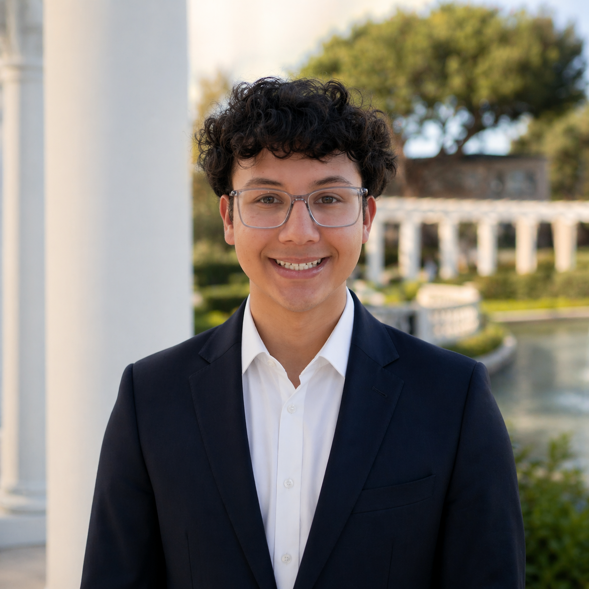

Solving complex mechanical, thermal, optical, and nanofabrication challenges through hands-on design, simulation, and validation.
I'm a Mechanical Engineering student at UC Santa Barbara, accepted into the BS/MS program, with my B.S. expected in June 2027 and M.S. expected in June 2028. A Dean's Honors student, I have hands-on experience spanning mechanical design, nanofabrication tool calibration, and physical prototyping. I enjoy working across the full stack of an engineering problem, from MATLAB and COMSOL theoretical modeling to designing real-world prototypes and fixtures.
My interests lie at the intersection of hardware design, manufacturing, and process engineering. I enjoy developing precision systems where mechanical design, materials, and complex physics converge to enable high-performance technologies.
Accepted into UC Santa Barbara's BS/MS program in Mechanical Engineering. B.S. expected June 2027; M.S. expected June 2028. Dean's Honors.
I'm looking to grow into a role where I am always learning and growing as an engineer.
Research, nanofabrication process work, hardware/test fixture design, and precision machining.
Industry internships and research positions.
Developed measurement, tolerance-analysis, and data workflows for optical assembly engineering in San Diego, California.
Cleanroom equipment calibration and metrology across deposition, etch, and lithography tools.
Designed and fabricated test fixtures supporting hardware validation for networking systems.
Built an automated shoe aging test rig as part of a small research team.
Supported prototyping and hands-on workshops at the Microsoft Garage.
Technical toolkit plus professional skills built through research, internships, and coursework.
Full work history, education, technical skills, and project summaries in a single PDF.
Download PDFFeel free to reach out regarding engineering internship opportunities or project collaborations.